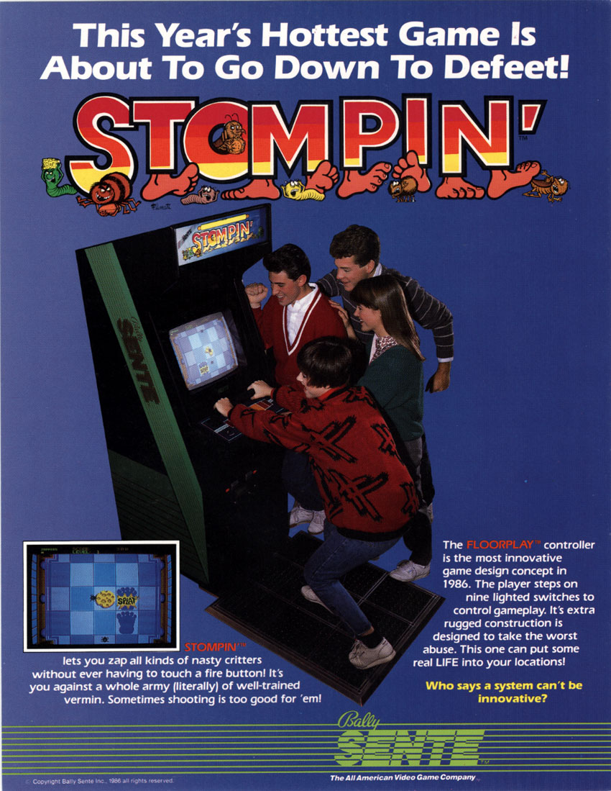

The Dance Pad Was Invented for Bugs
In 1986, Nolan Bushnell co-invented an arcade cabinet with a 3x3 grid of foot pads surrounded by glowing LEDs. Players stomped on bugs. The company called it 'floorplay.' Only two cabinets survive. Twelve years later, Dance Dance Revolution made the same idea a global phenomenon.
In 1986, eleven years after founding Atari and two years after selling Chuck E. Cheese, Nolan Bushnell was working at a company called Bally Sente — a subsidiary of Bally Manufacturing created to develop cartridge-based arcade games. Bushnell was listed as a co-inventor on US Patent 4,720,789, filed on Halloween 1985 and granted in January 1988. The patent described something that barely existed in the world: a video game you played by standing on a grid of pads and moving your feet.
The game was called Stompin'. The objective was to squash bugs, mice, frogs, and fish by placing your feet on the corresponding pads of a 3×3 floor matrix. It was not a rhythm game. There was no music to step in time with. You did not dance. You just stomped — rapidly, urgently, while gripping a handlebar so you wouldn't fall over. Bally Sente coined a term for this new interaction category: floorplay.
It was the first foot-operated grid controller in arcade history. It failed commercially. Only two dedicated cabinets are known to survive. And it directly invented the interaction model that would, twelve years later, become Dance Dance Revolution.
What was under your feet
The floor controller was a platform slightly raised from the ground, divided into nine weight-sensitive pads in a 3×3 square. Each pad sat on resilient foam and activated one of three parallel membrane switches when you stepped on it — a flat, no-moving-parts design that could survive the kind of abuse that arcade operators expected. A 9-bit shift register captured which pads were active, and the game's Motorola 6809 CPU polled it to determine foot position. Simultaneously, the CPU drove a second shift register controlling 24 LED light segments arranged in rings around each pad. When you moved your foot, the lights moved with you.

This was not a gimmick bolted onto an existing game. The entire game was designed around the floor controller. Stompin' shipped on the SAC-I system — Bally Sente's swappable-cartridge arcade hardware — but the floor pad was integral. You could not play Stompin' with a joystick. The interaction was the point.
The patent that saw the future
Here is what makes the Stompin' patent remarkable. It was not merely a patent for a bug-stomping game. It was a patent that explicitly described two futures at once:
"The processor can be programmed to provide a specific exercise program wherein the video display provides direction for the placement of the operator's feet on the floor controller and the location signals are used by the processor as a measure of success of the operator in following the exercise program."
The inventors — Bushnell, Roger Hector, Howard Delman, Edward Rotberg, and Jon Kinsting — understood that they were building not just a game but an exercise apparatus. The same patent even described a simplified 3-pad version "that can be used in an in-place jogging exercise program." In 1985, when the patent was filed, there was no market for this. The home exercise boom was about step aerobics and VHS tapes. The idea that a video game console would tell you where to place your feet and measure your performance was absurd.
Thirty-five years later, it is a $10 billion industry.
Why did it fail?
Bally Sente itself was the problem. The company was founded to compete with the arcade giants using a cartridge-based model that would let operators swap games without buying new cabinets — a smart idea that arrived just as the arcade industry was entering its long decline. Stompin' was shown at trade shows in 1985 and 1986, got some attention, and then sank with the rest of Bally Sente when the division was closed. The cabinets that had been sold were eventually converted or scrapped. Only two are known to exist today.

The irony is thick. Bally Sente had a genuinely novel interaction paradigm — a matrix of foot-operated pads with real-time position sensing and visual feedback at the player's feet. It was the right idea at the wrong time, in the wrong industry, on the wrong hardware platform. By 1998, when Konami released Dance Dance Revolution with a nearly identical 3×3 pad layout (up, down, left, right arrows), the arcade industry had been through a revival cycle, Japanese music games were ascendant, and someone had the insight that foot pads plus music plus choreography equals a phenomenon.
But the interaction model — stand on a grid, step on the right pad at the right time, lights and screen confirm your position — was already twelve years old. It was just that nobody remembered who invented it, because the game it was invented for had you stomping on frogs.
What I keep thinking about
I keep thinking about the word "floorplay." It is a terrible word. It sounds like something a marketing department came up with in a conference room — which is exactly what happened. But it is also a word that is trying to name something that did not yet have a name. There was no vocabulary for foot-operated game interfaces in 1986 because the category did not exist. Bally Sente had to invent the word because they were inventing the thing.
That is what this museum is for: the moments before the vocabulary caught up. The things that had to be named with bad marketing terms because nobody had ever needed to name them before. Stompin' is not a great game. It is not even a well-remembered game. But the interaction model it shipped — a grid at your feet, a screen above, and your whole body as the controller — is now embedded in thousands of arcades, living rooms, and gyms worldwide.
The bugs are gone. The dancing remains.
— Beepy